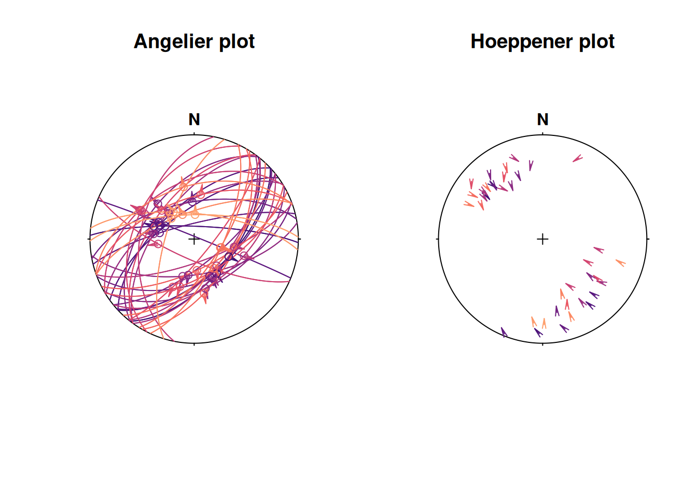
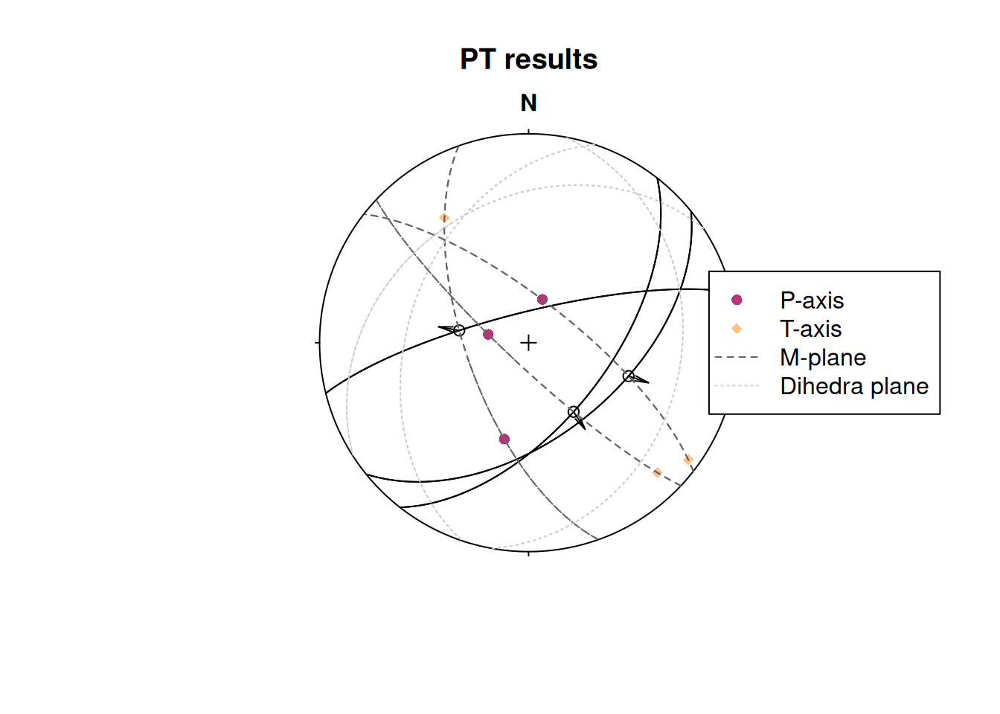
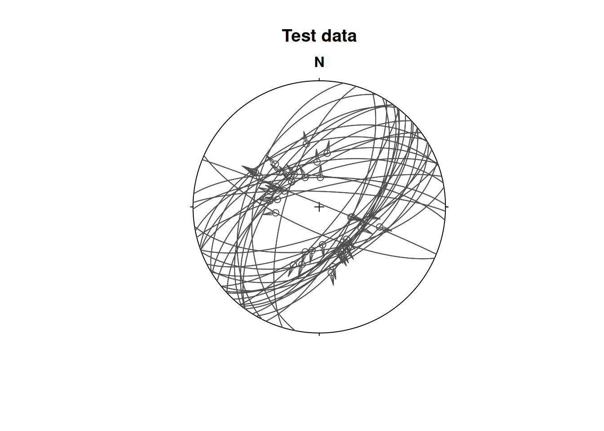
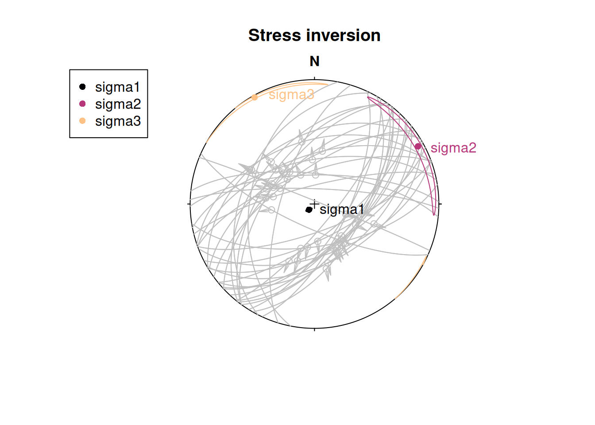
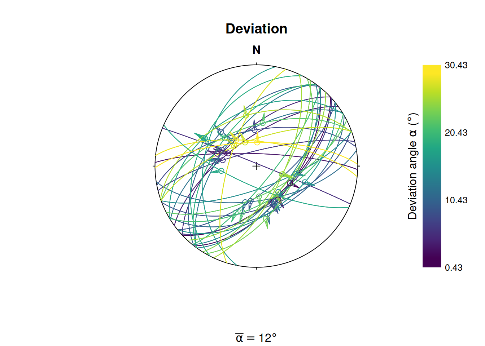
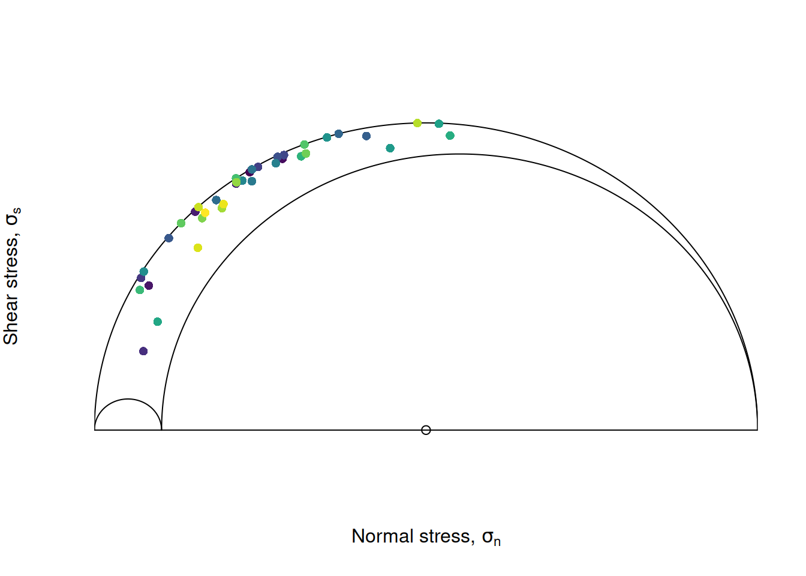
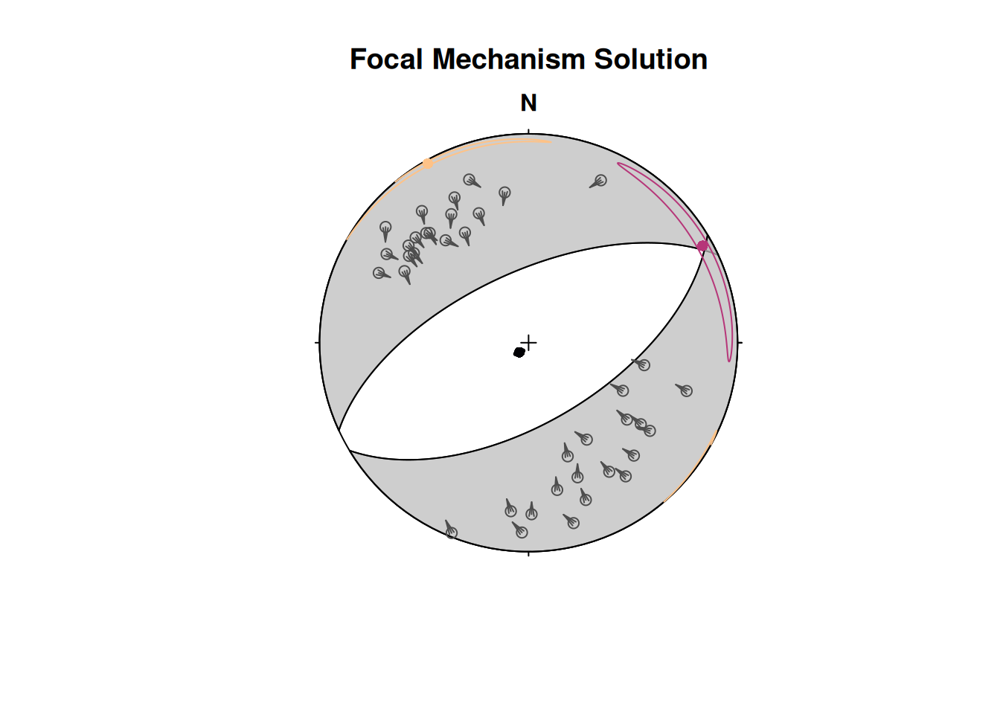
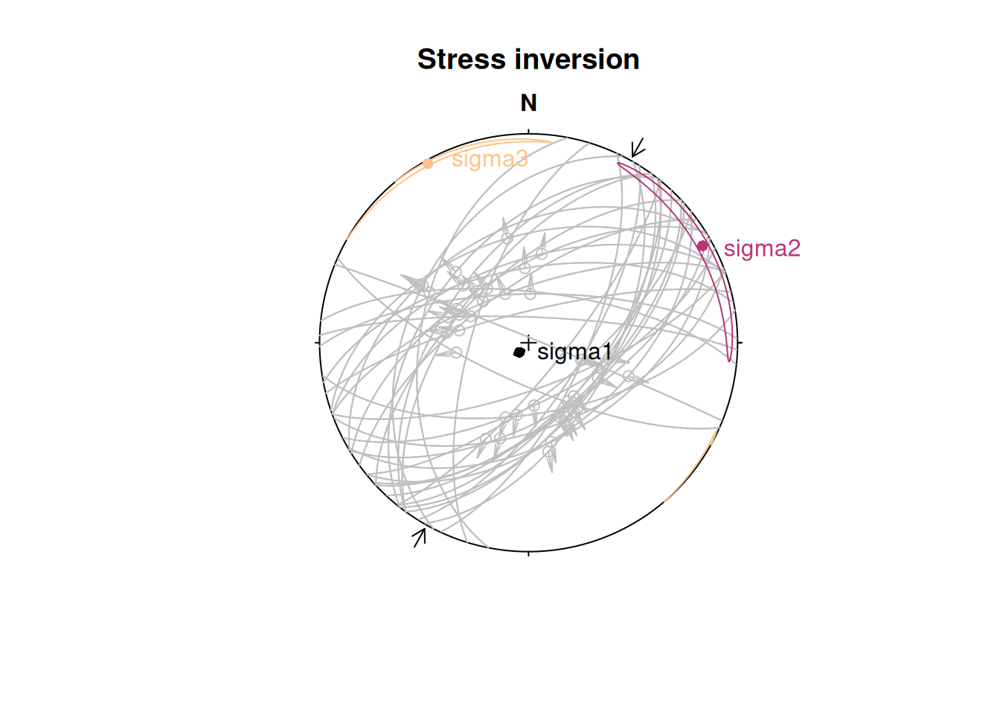

This tutorial demonstrates the "Fault" object. It also shows how you can extract paleo-stress directions from fault slip data.
Fault objects
A fault is given by the orientation of its plane (dip direction and dip angle), the orientation of the slip (e.g. measured from striae, given in azimuth and plunge angles), and the sense of displacement:
my_fault <- Fault(120, 50, 60, 110, sense = -1)Note
Sense of fault displacement is 1 or -1 for normal or thrust offset, respectively.
Rake of the fault, i.e. the angle between fault slip vector and fault strike, measured clockwise in the fault plane:
Fault_rake(my_fault)[1] -72.7706Define a fault by just knowing the orientation of the fault plane, the sense, and the rake:
# 1. Define a plane through dip direction, dip angle
fault_plane <- Plane(c(120, 120, 100), c(60, 60, 50))
# 2. Define a fault through the plane and rake angle:
Fault_from_rake(fault_plane, rake = c(84.7202, -10, 30))Fault object (n = 3):
dip_direction dip azimuth plunge sense
[1,] 120 60 109.52858 59.581591 1
[2,] 120 60 24.96163 -8.649165 -1
[3,] 100 50 30.36057 22.521012 1Often, measured orientation angles can be (slightly) imprecise and subject to some random noise. Thus, judging by the measurements, the slip vector will not lie (perfectly) on the fault plane. The misfit can be quantified and the measurements corrected so that the line lies exactly in the plane:
p <- structr::Pair(120, 60, 110, 58)
misfit_pair(p)$fvec
Vector (Vec3) object (n = 1):
x y z
0.4306083 -0.7432653 0.5119893
$lvec
Vector (Vec3) object (n = 1):
x y z
-0.1752490 0.4876331 0.8552787
$misfit
[1] 0.02793105
correct_pair(p)Pair object (n = 1):
dip_direction dip azimuth plunge
120.08572 59.20357 109.76778 58.79054 Note
A
"Pair"object is a container of associated plane and line measurements. Basically like a fault without the sense of displacement.
Plotting faults
Fault objects consist of planes (fault plane), lines (e.g. striae), and the sense of movement. There are two ways how these combined features can be visualized, namely the Angelier and the Hoeppener plot.
- The Angelier plot shows all planes as great circles and lineations as points (after Angelier, 1984). Fault striae are plotted as vectors on top of the lineation pointing in the movement direction of the hanging wall. Easy to read in case of homogeneous or small datasets.
- The Hoeppener plot shows all planes as poles while lineations are not shown (after Hoeppener, 1955). Instead, fault striae are plotted as vectors on top of poles pointing in the movement direction of the hanging wall. Useful in case of large or heterogeneous datasets.
First we load some example data (here the data from Angelier, 1990)1
# angelier1990 is an example fault dataset:
data("angelier1990")
fault_data <- angelier1990$TYM
# define some colors for each fault in the dataset (here the fault sense)
fault_cols <- assign_col(fault_data[, 5], pal = viridis::magma, begin = .2, end = .8)
par(mfrow = c(1, 2))
stereoplot(title = "Angelier plot")
angelier(fault_data, col = fault_cols)
stereoplot(title = "Hoeppener plot")
hoeppener(fault_data, col = fault_cols, points = FALSE)
Fault stress analysis
The Wallace-Bott hypothesis states that fault slip occurs parallel to the resolved shear stress (shear traction) on the fault plane. This allows to reconstruct stress axes using fault-slip data. {structr} offers several techniques to calculate the orientation of principal stress axes, the simple P-T method, and fault-slip inversion techniques.
P-T method
This simple technique calculates the P- and T-axes, the kinematic (movement) plane (M), and the dihedra separation plane (d).
First we take some example data (here three randomly sampled faults from the TYM dataset of Angelier, 1990)2
fault_data_subset <- sample_spherical(fault_data, 3)
print(fault_data_subset)Fault object (n = 3):
dip_direction dip azimuth plunge sense
[1,] 141 53 108.4685 48.20984 1
[2,] 128 59 146.8990 57.58045 1
[3,] 346 78 280.0306 62.43703 1$p
Line object (n = 3):
azimuth plunge
[1,] 17.54514 72.31849
[2,] 281.60925 73.96385
[3,] 194.15357 50.70250
$t
Line object (n = 3):
azimuth plunge
[1,] 126.2428 5.835034
[2,] 135.2532 13.456894
[3,] 326.0860 28.674715
$m
Plane object (n = 3):
dip_direction dip
[1,] 217.99201 106.63091
[2,] 223.18909 81.43997
[3,] 70.46243 114.41753
$d
Plane object (n = 3):
dip_direction dip
[1,] 108.4685 138.2098
[2,] 146.8990 147.5804
[3,] 280.0306 152.4370Plot the results:
stereoplot(title = "PT results")
fault_plot(fault_data_subset)
points(fault_data_subset_PT$p, col = "#B63679FF", pch = 16)
points(fault_data_subset_PT$t, col = "#FEC287FF", pch = 18)
lines(fault_data_subset_PT$m, lty = 2, col = "grey40")
lines(fault_data_subset_PT$d, lty = 3, col = "grey80")
legend("right",
legend = c("P-axis", "T-axis", "M-plane", "Dihedra plane"),
col = c("#B63679FF", "#FEC287FF", "grey40", "grey80"),
pch = c(16, 18, NA, NA), lty = c(NA, NA, 2, 3)
)
Fault slip inversion
Our goal is to find the single uniform stress tensor that most likely caused the faulting events. With only slip data to constrain the stress tensor, the isotropic component and the absolute magnitude of the stresses cannot be determined, unless assumptions about the fracture criterion are made. Hence, the inversion is for the reduced stress tensor only, i.e. the orientation of the principal stress axes and the stress ratio. A single fault cannot completely constrain this tensor; therefore it is necessary to simultaneously solve for a number of faults, so that a single tensor that best satisfies all of the faults is found.
Note
This is equivalent to assuming that the stress field is a constant tensor within the region being studied for the duration of the faulting event.
{structr} provides four numerical solutions to determine the orientation of the principal stresses from fault slip data.
Michael (1984): Direct inversion method3 which uses bootstrapping for confidence intervals of the stress estimates.
Angelier (1990): Direct inversion method4 coupled with the iterative optimization after Mostafa (2005)5 to find the best fit reduced stress tensor.
Yamaji & Sato (2006): Direct inversion method using the 5-dimensional parameter space6.
Hansen (2013): Direct inversion using a 9-dimensional parameter space, useful when vorticity affects the fault-slip data7.
stereoplot(title = "Test data")
fault_plot(fault_data, col = "grey30")
The stress inversion using the Michael method with 10 bootstraps:
inv_res <- slip_inversion(fault_data, method = "michael", n_iter = 10)
# Average alpha angle
inv_res$misfit$alpha_mean[1] 12.25499
# Average resolved shear stress
inv_res$tau_mean[1] 0.9289024To check the accuracy of the solution, you can evaluate
- the average angle α between the tangential traction predicted by the best stress tensor and the slip vector on each plane (ideally close to 0),
- the average resolved shear stress on each plane (should be close to 1), and
- the average “Ratio Upsilon” (RUP) parameter after Angelier (1990), ranging from 0 (perfect fit) to 200% (misfit).
To visualize the orientation of the principal stresses and the confidence region of the axes, you may use the stereoplot() functions from {structr}:
cols <- c("#000004FF", "#B63679FF", "#FEC287FF")
stereoplot(title = "Stress inversion")
fault_plot(fault_data, col = "grey75")
stereo_confidence(inv_res$principal_axes_CI$sigma1, col = cols[1])
stereo_confidence(inv_res$principal_axes_CI$sigma2, col = cols[2])
stereo_confidence(inv_res$principal_axes_CI$sigma3, col = cols[3])
text(inv_res$principal_axes,
label = rownames(inv_res$principal_axes),
col = cols, adj = -.25
)
legend("topleft",
col = cols,
legend = rownames(inv_res$principal_axes), pch = 16
)
The stress shape ratio after Angelier (1979)8:
inv_res$stress_shape$phi[1] 0.101247
# 95% confidence interval
inv_res$phi_CI[1] 0.05232139 0.13244959The angle α is the angle between the tangential traction predicted by the best stress tensor and the slip vector. This deviation can be visualized in the stereoplot:
alpha <- inv_res$misfit$alpha
stereoplot(
title = "Deviation",
sub = bquote(bar(alpha) == .(round(inv_res$misfit$alpha_mean)) * degree)
)
fault_plot(fault_data, col = assign_col(alpha))
legend_col(
seq(min(alpha), max(alpha), 10),
title = bquote("Deviation angle" ~ alpha ~ "(" * degree * ")")
)
stress_components <- sigma2shearnorm(inv_res$sigma, fault_data, friction = 0.6)
Mohr_plot(
sigma1 = inv_res$principal_vals[1],
sigma2 = inv_res$principal_vals[2],
sigma3 = inv_res$principal_vals[3],
unit = NULL, include.zero = FALSE
)
points(stress_components[, "normal"], abs(stress_components[, "shear"]),
col = assign_col(alpha), pch = 16
)
Focal mechanism plot
The “beach ball” below shows the mechanism of the fault plane that is optimally oriented for slip in the inverted stress field, assuming a friction coefficient of 0.6:
stereoplot(title = "Focal Mechanism Solution")
stereo_fms(inv_res$sigma, friction = 0.6)
hoeppener(fault_data, col = "grey30")
stereo_confidence(inv_res$principal_axes_CI$sigma1, col = cols[1])
stereo_confidence(inv_res$principal_axes_CI$sigma2, col = cols[2])
stereo_confidence(inv_res$principal_axes_CI$sigma3, col = cols[3])
Maximum horizontal stress
The orientation of the maximum horizontal stress () can be calculated from the orientations of the principal stress axes (, , ) and their relative magnitudes 9. Note that .
First, we define the orientation of the principal stress axes:
To get , which is perpendicular to and , we calculate the cross-product of the two vectors:
S2 <- crossprod(S3, S1)The azimuth of for a given stress ratio R = 1:
SH(S1, S2, S3, R = 1) # in degrees[1] 70.89For several stress ratios:
R SH
[1,] 0.0 13.01021
[2,] 0.1 13.37695
[3,] 0.2 13.84162
[4,] 0.3 14.44908
[5,] 0.4 15.27621
[6,] 0.5 16.46586
[7,] 0.6 18.31445
[8,] 0.7 21.53704
[9,] 0.8 28.23884
[10,] 0.9 45.01043
[11,] 1.0 70.89000The direction for our slip inversion result from above:
inv_shmax <- SH(
S1 = inv_res$principal_axes[1, ],
S2 = inv_res$principal_axes[2, ],
S3 = inv_res$principal_axes[3, ],
R = inv_res$stress_shape$R
)
print(inv_shmax)[1] 60.80844This (or any) direction can be added as compression arrows to a stereoplot using stereo_shmax():
stereoplot(title = "Stress inversion")
fault_plot(fault_data, col = "grey75")
stereo_confidence(inv_res$principal_axes_CI$sigma1, col = cols[1])
stereo_confidence(inv_res$principal_axes_CI$sigma2, col = cols[2])
stereo_confidence(inv_res$principal_axes_CI$sigma3, col = cols[3])
text(inv_res$principal_axes,
label = rownames(inv_res$principal_axes),
col = cols, adj = -.25
)
stereo_shmax(inv_shmax)